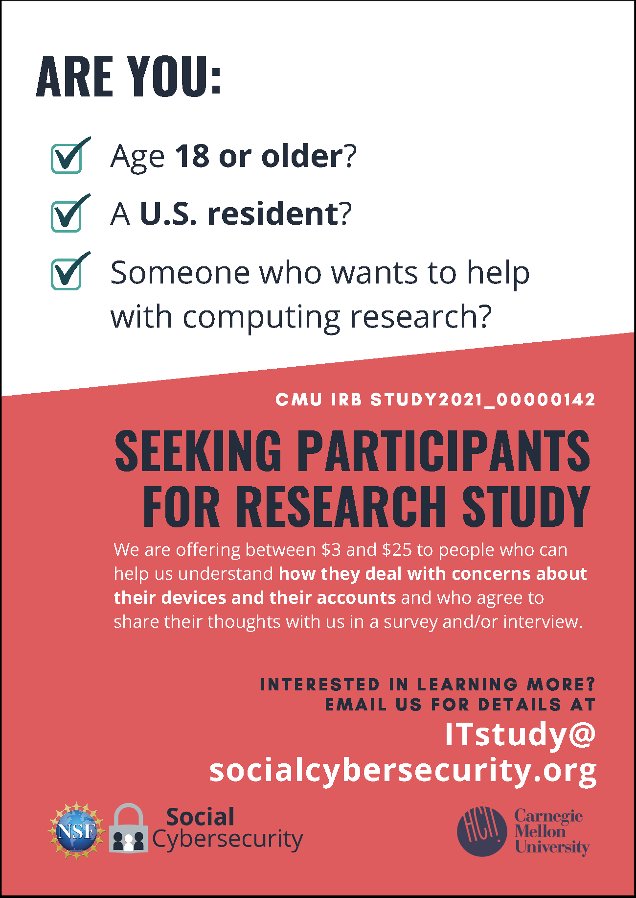

New study - Survey about computing practices

For our research into how people use information technology, we want to know more about how you deal with concerns about your devices and your accounts.
If you are a U.S. resident age 18 or older, you are eligible to take our initial survey. The survey should take about 10-12 minutes to complete, for which you will be emailed a $3 Amazon gift card. You may also be invited to take part in a paid research interview at a later date.
Are you interested? If so, please email us by May 15, 2021, at:
ITstudy [at] socialcybersecurity [dot] org
and we will send you more details.
Thanks in advance for your consideration!